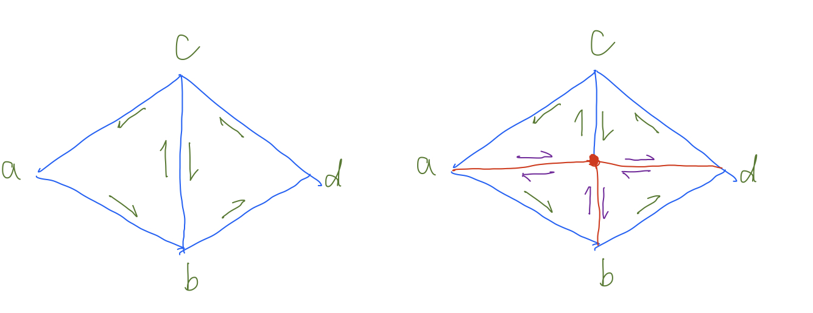

Overview
Give a high-level overview of what you implemented in this project. Think about what you've built as a whole. Share your thoughts on what interesting things you've learned from completing the project.
Section I: Bezier Curves and Surfaces
Part 1: Bezier curves with 1D de Casteljau subdivision
De Casteljau's algorithms is an algorithm that recursively defines points on a Bezier curve
Given n points, (n - 1) new points are each added on the edge formed by two adjacent old points.
The position is determined by linear interpolation of the coordinates of old points with a control variable t
using the formula new_point = (1 - t) * beg + t * end;. beg and end
are two adjacent given points. This formula is applied to all n-1 edges of given n points,
and the new points obtained from is algorithm is evaluated again recursively until only one point is produced from thi algorithm
the one last point produced from this recursively algorithm is a point on Bezier curve at the specified time t.
Applying this method to all t from 0 to 1 gives the entire Bezier curve.
The implementation uses native Vector<> iterator in c++. In each loop cycle,
the point referenced by the iterator is linearly interpolated with the previous point to get the new point,
then the new point is added to a container vec.push_back(new_point);, which is returned back at the end.
This function is called each time "E" is pressed to get new points.
6
0.200 0.350 0.300 0.600 0.500 0.850 0.700 0.9 1.00 0.70 1.25 0.30
|
|
|
|
|
|
|
|
|
|
|
Part 2: Bezier surfaces with separable 1D de Casteljau subdivision
We first generate a curve from each rows of point. The procedure for each curve is the same as part 1. This step evaluates the one dimension of the surface plane by creating mutiple curves parallel to that axis. Using u, we can sample one point from each of the n curves. The sampled n points from n curves define another curve, which defines the other dimension of the surface plane. Evaluate the points on the new curve using v gives points on the surface. De Casteljau algorithm here, given u and v, first calculates one point for each curve formed by each row of points De Casteljau algorithm is applied again on the newly formed points to get a point on the surface.
BezierPatch::evaluateStep() is exactly the same as the one from part 1, except all Vector2D is replaced with Vector3D.
BezierPatch::evaluate1D() recursively applies BezierPatch::evaluateStep() to the given container argument
until the container returned from BezierPatch::evaluateStep() has only one element. In this case, the only element is returned.
BezierPatch::evaluate() applies BezierPatch::evaluate1D() on each row of the 2D vector container.
The return values are all pushed to a vector container and BezierPatch::evaluate1D() is applied again to the new container
to get the point on the surface given u and v.

|
Section II: Sampling
Part 3: Average normals for half-edge meshes
First, the same vertex traversal algorithm from printNeighbourPosition in the Primer is used here
to visit each half edge of edge around the vertex. Given one half edge referenced by the vertex, we can find first find the twin that points to the vectex.
The next half edge that also points to the vertex can be found by calling next and then twin on that half edge, and so on.
For each half edge h_twin that points to the vertex, we get the three points of the triangle
that contains the half edge. For example, p2 = h_twin->next()->next()->vertex()->position;.
Then the area and the normal vector are calculated together at the same time using vector formula - 0.5 * cross(p0 - p1, p2 - p1);.
The vector length is equal to the area and the direction is the normal. The negative sign here is used to ensure pointing outside.
All the vectors are summed together and then normalized,
which gives the average normals for half-edge meshes.
|
|
|
Part 4: Half-edge flip
Given edge of the input argument, I first traversed all elements within the two triangles. After flip, the half edge of the edge is now pointing to vertex d from vertex, and its twin half edge is now pointing to vertex a from vertex d. There are two faces, four vertices, and six hal edges. The middle edge is flipped counterclockwise. For vertices, we need to reassign half edges for point b to and c, because one edge connecting to it is flipped. The half edges of the two faces are also reassigned. Face on the left becomes face at the top and face on the right becomes face at the bottom. Then we need to reassign all six half edges. The properties edge, and twin do not need to be reassigned, because no elements are created and they do not change. The properties next, vertex, and face are all reassigned to their respective triangle shown in the figure.
One implementation trick used is that pointer variables are all defined at the beginning before reassignments, so during the reassignment process, we only need to use the variables defined at the beginning. This prevent me from referencing to modified references.
One bug I encountered was that I was dereferencing iterator for reassignments, but I got segfaults. Then I reviewed how c++ iterator works and realized that dereferencing them is not required. Also, because I reassigned pretty much all properties regardless if it is required, I did not encounter bugs related to reference issues.
|
|
|
|
|
|
|
|
Part 5: Half-edge split
The split edge operation creates one new vertex, two new faces, three new edges, and six half edges.
The old edge from parameter is reassigned. Before split it connects vertices b and c. After split,
it connects the newly created vertex and vertex c shown on the figure. On the implementation figure,
all new point and edges are in read color and all new half edges are in purple color. The directions of
all half edges are also shown on the figure. The two old faces on the left and right sides become
the top left and top right faces respectively. The two new faces are the two bottom ones.
The half edges references of all points, edges, and faces are reassigned to their respective new triangle.
For half edges, the method setNeighbors is used to assign all properties at once.
In the implementation, the half edges of the four newly created triangles are processed/reassigned in a counterclockwise order,
starting from the old half edge of top right triangle. The location of the new vertex is the average of vertices c and b.
One implementation trick used is that all references to elements are defined before doing reassignment, so during reassignments, we do not have to go through all pointers to get the referenced elements. This prevents bugs causes invalid or incorrect pointers during reassignment process. The declared and defined references include both old elements and new elements.
One bug I experienced was that in my first try, I calculated the new vertex position at the end; however, because of reference error, the calculated value was incorrect, so then I did it before reference reassignment and after variable definitions. This is the only bug I experienced.
|

|
|
|
|
|
|
|
Part 6: Loop subdivision for mesh upsampling
The first step is to calculate all new positions of the existing vertices,
and save them to newPosition field inside vertex instances. At the same time, the isNew
variable is set to false. This helps to identify if the vertices are new or old after edge split.
This step is done is a loop that traverse through all existing vertices.
The formula for updating existing vertices is i->position * (1 - n * u) + u * (sum); .
For each loop iteration, one vertex is visited. And another loop is used to get all vertices around the
targeting vertex, the positions of the vertices around the targeting vertex are used in the formula to get the sum of the positions.
The second step is to calculate positions of new vertices and save them to newPosition
variable inside edge instances. At the same time, isNew field is set to false.
This step is done is a loop that traverse all existing edges.
The formula for updating the position of new vertices is i->newPosition = (3.0 / 8.0 * (a + b)) + (1.0 / 8.0 * (c + d)) ,
where a, b, c, d are the vertices around the splitting edge, indicated in the figure in edge split section.
The next step is edge split and assigning new vertex positions stored in edge instances back to newly created vertices.
This is done in a loop traversing edges. Because according to the source code, all newly created edges are appended to the back of the container,
we get the size of the container before entering the loop. size helps determine how many loop iterations we need.
In each iteration, edge is splitted, and the new position is assigned to the new vertex returned from splitEdge()
The last step is to traverse all edges again and flip the edges if they are new and connect to old vertices
One interesting implementation is that because it is hard to find which edge stores the new position after edge split,
I store the position in a temporary variable before edge split, and then assign the position beck to the new vertices returned form splitEdge()
Also, I followed the suggestions from the spec and used isNew to determine if elements are created from edge split operation.
I experienced two bugs. The first one is related to the floating point arithmetic operation in c++.
The weights used in calculating new vertex positions are in fraction, but the numerators and the denominators are all in integer.
However, in c++, if both operants are in integer, the returned value is also in integer, which leads to numerical error if we want floating point values.
To fix this bug, add '.0' after all integer values. so 3 becomes 3.0, for example.
Another bug is that, when edge is splitted, three new edge instances are created, but among the three, there is one edge that can
actually be considered as part of the old existing edge. This is important, because when doing edge flip, that specific edge has to
be interpreted as an old edge in order for the algorithm to work correctly. In my specific implementation, after edge split,
the old edge become the top edge, shown in the figure in edge split section, so the bottom edge right below the old edge should also be mark as a old edge.
However, if the edge is marked as an old edge, the edge splitting can become a infinite loop. In the first implementation,
the terminating condition for this loop is that the all old edges are splitted and iterator goes to the end of the container. Because edge split
marks a new edge as old, this "old" will be processed again, even though it shouldn't be processed. The solution to this problem is
instead of using i!= mesh.edgesEnd() aas the terminating condition, we get the size of edge container before entering edge split loop, auto size = mesh.nEdges();.
The size is used as the terminating condition,count != size. This works because the newly created edges will be appended to the back of the container.
So the size is always valid and includes all old edges that come the mesh before entering edge split loop.
|
|

|
|
|
After loop subdivision, sharp corners and edges are attenuated. All shape features become more smooth. This is caused by the formula that updates old vertices through averaging with the surrounding vertices. To reduce this effect, pre-splitting can be done. As shown in the figures below, one edge of the low resolution torus is splitted multiple times before loop subdivision. After one loop subdivision, we can see on the top right figure below that one side of the torus retains its sharp edge. After multiple loop subdivision, the edge is still there. The reason behind this is that because more vertices are created around the area where edge split is applied, the averaging process uses more local vertices with similar positions. Compared with vertices further away from the local area, new vertices in the local area have similar positions, so updated positions are less likely to change. This helps to retain the sharpness of edges.
|
|
|
|
|
|
The top left image shows asymmetry after subdivision. This is because the edges layout before subdivision is not symmetric. This asymmetry also goes to the mesh after subdivision. To make mesh after subdivision symmetric, we can create more edges and make the edge layout symmetric in all direction. Shown in the top right image below, each face of the cube has four edges. In this layout, the edges look symmetric from any axis, so after subdivision, the subdivided edges will also be symmetric. This means all new vertices will be symmetric after subdivision.
The reason that a symmetric cube becomes asymmetric after subdivision is that because the edges are not symmetric in the cube, loop subdivision will update the positions of vertices slightly differently, and the new edges and faces created are also asymmetric. Because the algorithm that updates the positions vertices uses edges to find surrounding vertices, asymmetry in edges causes the updated vertices to be in asymmetric positions. This change the overall shape the of the subdivided mesh to be asymmetric. To fix this problem, we can split and flip the edges to make the mesh edge layout symmetric before doing loop subdivision.
|
|
|
|
|
|
Section III: Optional Extra Credit
If you are not participating in the optional mesh competition, don't worry about this section!